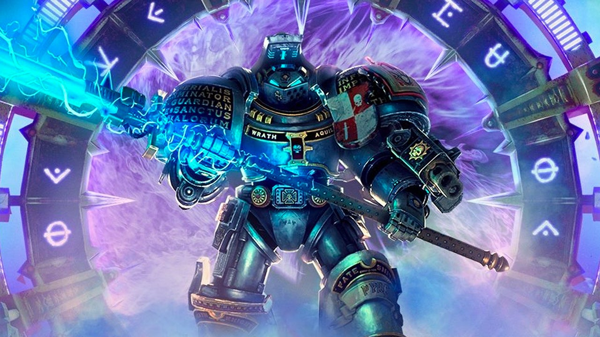

Készítsd el az alábbi táblázatot:
Követelmények:
Megoldásod ide kerül:
| Tárgy | Jegy | Dátum |
|---|---|---|
| Matematika | 5 | 2026-01-19 |
| Magyar | 4 | 2026-01-16 |
| Angol | 3 | 2025-11-11 |
| Történelem | 3 | 2025-11-11 |
| Digitális Kultúra | 4 | 2026-01-12 |
Készítsd el egy hipotetikus labdarúgó bajnokság pontlétráját:
Követelmények:
Megoldásod ide kerül:
| Helyezés | Csapat | Játszott | Győzelem | Döntetlen | Vereség | Pont |
|---|---|---|---|---|---|---|
| 1 | Warhammer United | 10 | 7 | 2 | 1 | 23 |
| 2 | Chaos FC | 10 | 6 | 3 | 1 | 21 |
| 3 | Eldar Eagles | 10 | 5 | 4 | 1 | 19 |
| 4 | Tyranid Titans | 10 | 4 | 2 | 4 | 14 |
Készítsd el a gyakorlófeladat-hoz szükséges képeket:
Követelmények:
Megoldásod ide kerül:

Warhammer 40k Primaris Intercessors
Készítsd el az alábbi étrendet táblázatban:
Követelmények:
Megoldásod ide kerül:
| Nap | Reggeli | Ebéd | Vacsora |
|---|---|---|---|
| Hétfő | Zabkása | Csirke saláta | Grillezett hal |
| Kedd | Melegszendvics | Marhahús leves | Zöldséges tészta |
| Szerda | Sajtos pizzaszelet | Töltött krumpli | Sült csirke |
| Csütörtök | Csoki golyó tejjel | Lencsefőzelék | Finom Bableves |
| Péntek | Tojásrántotta | Halászlé | Simon's Burger, Hamburger |
| Szombat | Humusz | Marha pörkölt | Tonhalas saláta |
| Vasárnap | Omlett zöldségekkel | Sült pulyka | Leves és szendvics |
Tipp: Az img tag src attribútumát elég URL-ből linkelni, vagy a warhammer/images mappból választani!
Önellenőrzés: Ellenőrizd, hogy minden th és td tag helyesen nyitott-zárt-e!